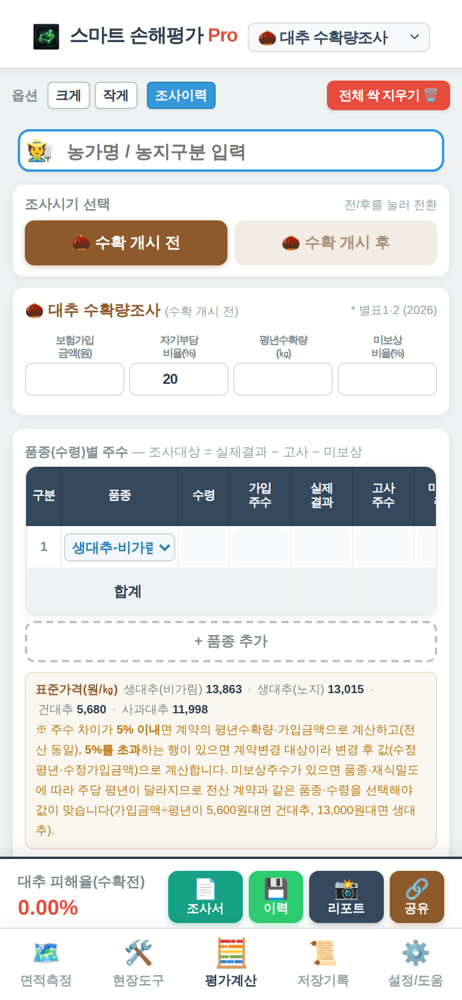

「+ 품종 추가」로 품종과 수령마다 한 줄씩 만듭니다. 품종은 전산 계약과 같은 것(예: 생대추-노지(재래종), 건대추, 사과대추)을 고릅니다.
가입주수, 실제결과주수, 고사주수, 미보상주수를 넣습니다.
조사대상주수와 적정표본주수는 자동으로 나옵니다. 실제 표본주수가 다르면 「실제표본」 칸을 고칩니다.
품종에 따라 표준가격과 계산 방식(무게식·개수식)이 다릅니다. 가입금액 ÷ 평년수확량이 약 5,600원대면 건대추, 13,000원대면 생대추 계약입니다. 품종을 잘못 고르면 미보상주수가 있을 때 피해율이 전산과 달라집니다.
3. 표본주 조사
품종마다 「구분」 카드가 생깁니다. 카드 제목에 구분 번호, 품종, 수령, 적정표본/표본 수가 나옵니다.
표본 순번은 구분끼리 이어서 매깁니다. 구분 1이 9번까지면 구분 2는 10번부터 시작합니다.
▲▼로 구분의 조사 순서를 바꿀 수 있습니다.
무게 조사에서는 표본주의 전부 무게와 절반 무게, 착과피해 구성(정상·50%형·80%형·100%형)을 넣습니다. 표 오른쪽 칸은 좌우로 밀어서 입력합니다.
값이 0이거나 빈 표본은 표본 수에 포함되어 계산됩니다. 확인이 필요한 칸은 색으로 표시됩니다.

화면 사진 자리 (img/calc-jujube.png)
대추 계산기 — 품종별 주수와 표본주 입력
4. 결과
조사대상주수, 표본주수, 평년수확량, 수확량, 미보상감수량, 피해율, 예상 보험금이 나옵니다. 피해율은 소수 셋째 자리에서 올림합니다.
계약변경 기준 (5%) 품종(수령)별 실제결과주수가 가입주수와 5% 넘게 다른 줄이 있으면 계약변경 대상으로 보고, 수정 평년수확량과 수정 가입금액(만원 미만 절사, 줄어들 때만 반영)으로 계산합니다. 결과에는 「계약변경 시 예상 평년수확량·가입금액」이 참고로 함께 나옵니다.
5. 저장
「📄 조사서」는 전산 양식에 맞춘 대추 조사서를 대추조사서_날짜시각으로 저장합니다. 「📸 리포트」는 계산 화면 전체를 저장합니다.